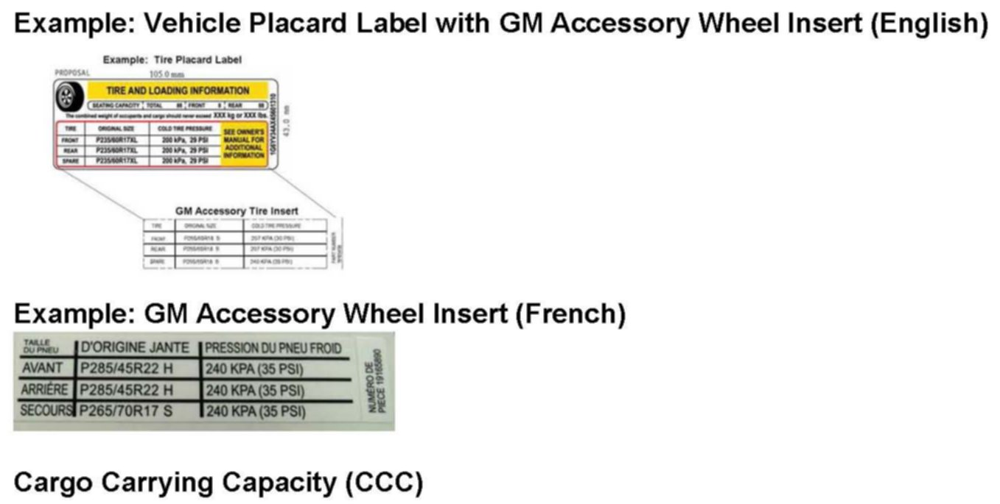
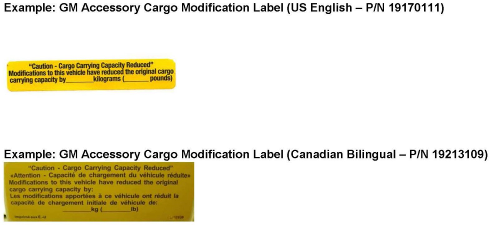
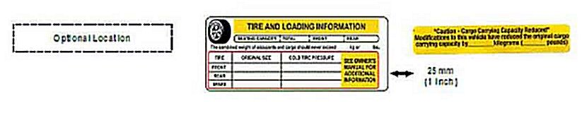
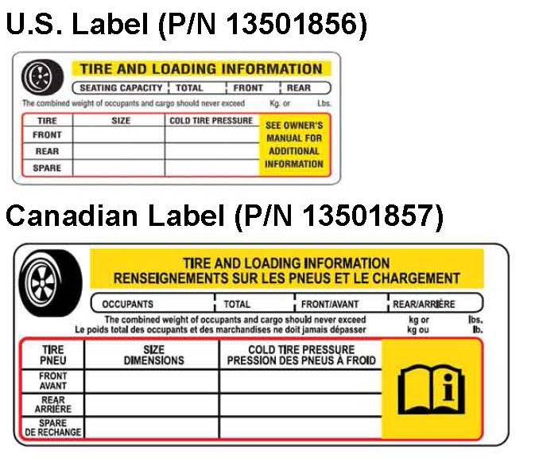
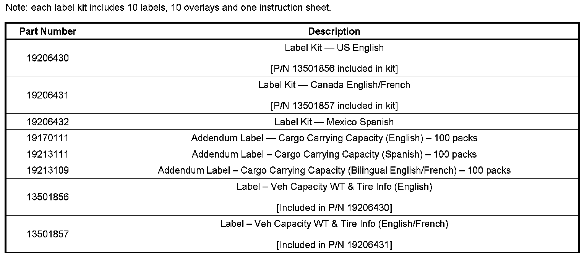
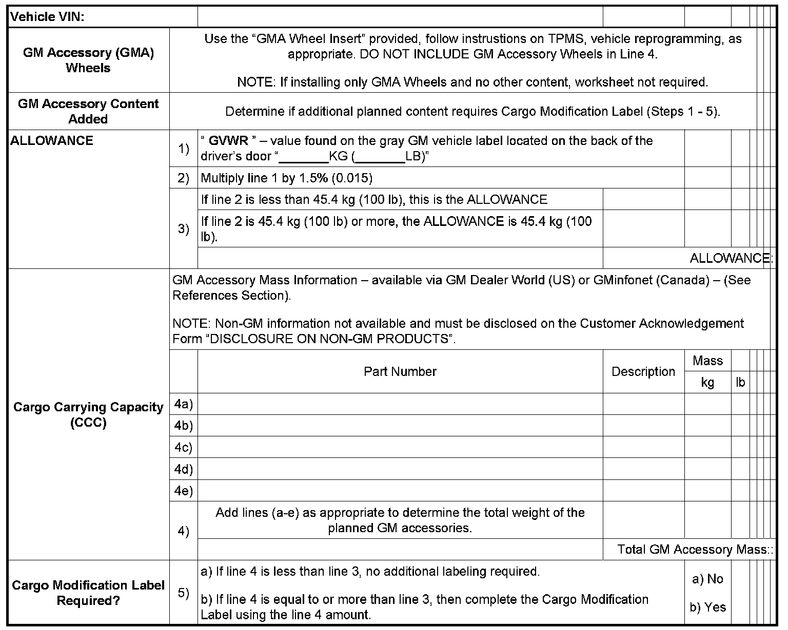

Wheels/Tires - Required Label When Changing Wheels/Tires
INFORMATIONBulletin No.: 07-03-10-016C
Date: August 29, 2008
Subject:
Requirements for Changing Tire and Wheel Assemblies - New Vehicle Placard (U.S. and Canada Only)
Models:
2009 and Prior GM Passenger Cars and Light Duty Trucks (including Saturn)
2009 and Prior HUMMER H2, H3
Supercede:
This bulletin is being revised to update the Part Information. Please discard Corporate Bulletin Number 07-03-10-016B (Section 03 - Suspension).
The purpose of this bulletin is to notify dealers who alter new vehicles prior to first retail sale, of changes to the Federal Motor Vehicle Safety Standard (FMVSS 110), and to remind dealers of the vehicle implications and requirements that are the responsibility of the dealership.
Effective June 2, 2008, the National Highway Traffic Safety Administration (NHTSA) requires all new vehicles with a 10,000 lb or less (passenger cars, light duty trucks and SUVs) gross vehicle weight rating (GVWR), that were manufactured after September 1, 2005 (2006 and newer model year vehicles), must be accurately reflected on the Vehicle Placard Label (Tire and Loading Information Label) tire size and pressures, cargo carrying capacity, and seating capacity.
Note:
Similar requirements are pending in Canada.
GM Vehicle Order Management
As a reminder, content specified in the vehicle order including all optional equipment (RPO), vehicle personalization options (VPO), or limited promotional options (LPO), have already been comprehended in the original vehicle labeling prior to first retail sale.
GM Accessory Wheels and Tires
GM Accessory Wheel and Tire Assemblies are released in approved combinations that have been designed and validated by GM for specific vehicle applications. Each GM Accessory Wheel contains the appropriate installation instructions which may include:

^ GM Accessory Wheel Insert (shown above) to be affixed over the existing Vehicle Placard.
^ Tire Pressure Monitoring System (TPMS) information.
^ Vehicle Calibration procedures, if required (refer to the technical bulletin on vehicle reprogramming).
Important:
Using the GM Accessory Wheel Insert comprehends all the necessary vehicle labeling required when only changing the wheel and tire assembly.

The new NHTSA rule that goes into effect June 2, 2008 provides an "ALLOWANCE" for equipment to be added to a new vehicle, prior to its first retail sale, equal to 1.5% of the GVWR, or 100 pounds, whichever is less, without having to modify the Vehicle Placard (so long as there are no changes to the tire and wheel information above).
If the combination of GM Accessories is greater than the ALLOWANCE specified above, then the Cargo Modification Label must be utilized (refer to worksheet at the end of this bulletin). This label may be used when adding additional equipment only or may be used along with the above wheel insert.

The Cargo Modification value must be legibly printed on the label with a black, fine point, indelible marker prior to applying the protective covering and be affixed within 1" (25 mm) of the Vehicle Placard.
GM Service Requirements

For GM authorized repair or collision work, or where the replacement of the original Vehicle Placard is necessary, the replacement label may be installed by completely removing the existing label and adhesive residue without scratching or discoloring underlying surface. Be sure to write down the original vehicle information prior to removal of the label.
Label Installation Procedures
After filling in the required label information, the mounting surface must be cleaned with a suitable solvent (50 percent Isopropyl Alcohol or equivalent). The new label must be applied to a clean, dry surface with a surface temperature not less than 65°F (18°C). Peel the liner from the backside of the label being careful not to touch or contaminate the adhesive. Carefully place the new label in the same location where the previous label existed, press firmly and smooth out. Then, apply the clear overlay in the same manner directly over the placard label to preserve and protect the information on the placard label.
References
To verify the weight of the GM Accessories using the GM part number, refer to GM Dealer World - "Accessory Information Center". In Canada, refer to GMinfoNET - "Product Information-Accessories" located under the Parts & Accessories page. For Saturn (U.S.), refer to Saturnteam.com, Parts and Accessories Tab, RIAs Portfolios. The weights have been added to the portfolios. For Saab (U.S.), an excel file will be sent out via Dealer World Messenger detailing the Saab accessory part numbers and weights.
Installation of Non-GM Products
Before non-GM products are installed on new vehicles, dealers should refer to Article 5.1.1 of the GM Dealer Sales and Service Agreement ("Dealer Agreement"). In addition to complying with the new requirements of FMVSS 110 above, if a dealer modifies or sells a modified new vehicle, or installs any equipment, accessory, recycled part or part not supplied by General Motors, the dealer must disclose this fact on the purchase order and bill of sale, indicating that the modification, equipment, accessory or part is not warranted by General Motors.
With respect to vehicle repairs, Article 7.2 of the Dealer Agreement provides that dealers will only use genuine GM or GM approved Parts and Accessories in performing warranty repairs, special policy repairs, and any other repairs paid for by General Motors. This also is addressed in the GM Service Policies and Procedures Manual. All of these existing procedures are in place to help ensure the safety and satisfaction of our customers.
Following these guidelines, the GM Service Policies and Procedures, and using approved GM Accessories and GM products for the vehicle, will help your dealership maintain the vehicle's compliance while meeting your customer's demand for personalization.

Parts Information

GM Vehicle Label Review Worksheet
(Must be completed prior to first retail sale)

Disclaimer